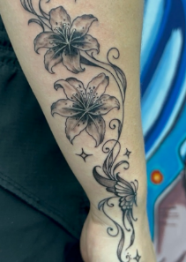

Preto e cinza
Sombreado e realismo, com profundidade e contraste. A base do trabalho do Ibraim.
Bom para retratos, animais e fechamentos
De $150 a $600 · 1 a 3 sessões
Ibraim Lagoa · tatuador internacional BR e EUA · Carolina do Sul
Fechamento de braço e perna, realismo, chicano, anime e traços delicados. Conte a sua ideia e receba uma estimativa na hora.
 Joker · preto e cinza
Joker · preto e cinzaAntes de marcar, o Ibraim olha a sua ideia, a região e as referências. O desenho é ajustado com você e só depois a sessão é marcada.
Não precisa chegar sabendo qual. Descreva a ideia no pedido e o Ibraim indica o estilo e o tamanho. Valores abaixo são estimativas de exemplo.
Sombreado e realismo, com profundidade e contraste. A base do trabalho do Ibraim.
Bom para retratos, animais e fechamentos
De $150 a $600 · 1 a 3 sessões
Cores vivas, anime e personagens, com acabamento limpo.
Bom para personagens, anime e homenagens
De $200 a $750 · 1 a 3 sessões
Retratos, letras e rostos com traço forte e sombra marcada.
Bom para quem quer um retrato marcante
De $180 a $650
Traço fino, flores, borboletas e letras, com leveza.
Bom para primeira tattoo e peças pequenas
De $100 a $350
Projeto completo em várias sessões, desenhado para o seu corpo.
Bom para quem quer um projeto grande
De $1.000 a $3.500 · várias sessões




Prévias de baixa qualidade do Instagram @superman_tattoo. As artes tratadas entram no projeto final.
Escolha região, tamanho e estilo, descreva a ideia e envie referências. A IA do Ibraim devolve uma faixa de valor na hora.
O Ibraim ajusta o desenho com você. Um sinal por cartão ou Zelle reserva a data.
No dia, atendimento com hora marcada. Depois você recebe lembrete e cuidados pós-tatuagem pelo seu canal.
Sou tatuador internacional, com trabalho no Brasil e nos Estados Unidos. Faço preto e cinza e colorida, com foco em realismo, chicano, anime e fechamentos. Atendo em português e em inglês, com hora marcada, e cuido de cada projeto do desenho à cicatrização.
Depoimentos de exemplo.
Fechou meu braço com um nível de detalhe absurdo. Super profissional.
Cliente · Charleston
Passei a ideia e a referência, e o desenho ficou melhor do que eu imaginava.
Cliente · Summerville
Orçamento rápido e atendimento em português. Recomendo.
Cliente · Goose Creek
Depende de região, tamanho, estilo e nível de detalhe. O pedido de orçamento devolve uma faixa na hora, e o Ibraim confirma o valor final depois de ver as referências.
Sim, um sinal reserva a data e abate do valor final. Dá para pagar por cartão ou Zelle.
Pode e deve. Envie fotos no pedido de orçamento. O Ibraim adapta o desenho ao seu corpo.
Peças pequenas levam de 1 a 2 horas. Fechamentos de braço e perna são feitos em várias sessões.
Carolina do Sul, EUA. O endereço exato vai na confirmação da sessão.
Peça um orçamento em 1 minuto ou chame o Ibraim no WhatsApp. Atendimento em português e em inglês.
Instagram: @superman_tattoo
Carolina do Sul, EUA